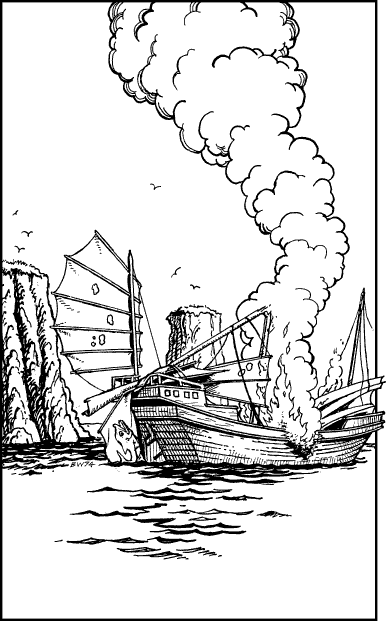

35
You awake early the following morning, just as the pre-dawn light is brightening the night sky. Captain Jenkshi and his crew have also risen early to ensure that The Azan is the first ship to leave Zharloum this morning. Shortly before dawn they weigh anchor and turn the ship about, and by the time the sun crests the horizon, you are already more than a mile away from Zharloum harbour, riding the morning tide ahead of a bracing westerly wind. Jenkshi tells you that the next port of call will be the city-state of Ghol-Tabras where you will dock in four days’ time to take on supplies of fresh water.
The first day out of Zharloum passes without incident. Then, around noon of the second day, the ship heads south as it leaves the Tentarium and enters the Gulf of Ralzuha. You are sitting on the foredeck, enjoying the sun and the splendid views of the rugged isles and coastline, when suddenly you notice something in the distance that makes your pulse race. You magnify your vision and see that it is a plume of smoke. It is rising from the hull of a burning ship located close to a cluster of rocky islets. As The Azan draws closer, you are able to see that a flag is hanging from a broken masthead which lies draped over the vessel’s smouldering stern. It is a green flag with scarlet edging, surmounted by a large silver fish. The sight of this flag makes you swallow hard for it is identical to the flag that flies from the mast of The Azan. It is the flag of a Suhnese trader.

When Captain Jenkshi and his men first see this flag for themselves, they become very anxious about what may have happened to the crew of this stricken vessel. Many of them have fathers, sons, and brothers who work Suhnese ships in these waters. They urge the captain to search for survivors and he grants his consent readily.
‘Steer towards the wreck, Tolshi,’ he says, ordering his helmsman to change course, ‘and I want all other hands on deck immediately. Everyone is on lookout duty.’
If you possess the Grand Master Discipline of Telegnosis, turn to 111.
If you do not possess this skill, turn to 195.